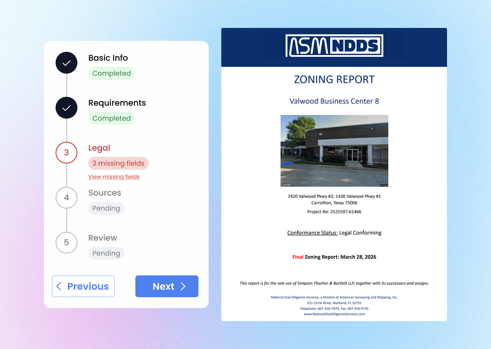

Building the software between your team and their best day.
Full-stack product design engineer for startups and operations moving fast.
Selected work
Tools that took the busywork out.


Automating Title Document Retrieval
Designed and developed an internal SaaS to extract and use AI to label nested documents from property title paperwork — turning a task that would take hours into minutes.

Reimagined Zoning Compliance Reporting
Designed and developed an internal SaaS to solve pitfalls in the zoning report writing and management process at an enterprise level.
More work
Property Condition Assessment
In progress
Quotting optimized
In progress